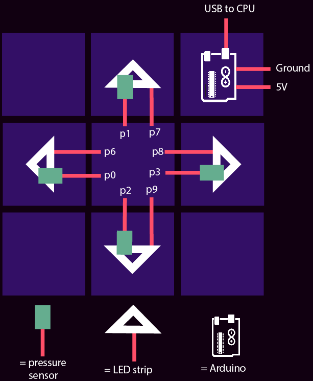

-
Design
We all love groovn' n' movin', so we wanted to make a game that integrates a web component and mechanical/electrical board that lets you dance. If you've noticed, this game is heavily based on Dance Dance Revolution (DDR). We were inspired by the original DDR game, and wanted to add a web element so that people could play it without a TV available. In addition, we were really interested in creating an engaging and structurally-sound dance board that people could dance and jump on.
Project Goals
- Successful software, mechanical and electrical integration to create a responsive DDR game from board to website!
- The mechanical board supports human weight and houses electrical wires and arduino
- Pressure sensors calibrated and synced with our web game
- Aesthetically pleasing and interactive board and web game
- Document our process and integration
System Diagram


In short, our system functions as follows:
- The website sends the board data through the arduino serialport. This data includes which step should be stepped on next (in 3 seconds). The LEDs of that step light up a blue color.
- An arrow that matches the step starts floating up on the website
- After 3 seconds, the arrow should match the top arrows, and if the step is correctly stepped on at that time, data will be extracted from the pressure sensor and will indicate that it's been stepped on. If stepped on correctly, the LEDs turn green for that moment, but if the step has not been correctly stepped on, the LEDs turn red.
- The website also updates the score to take into account the score increase or deduction.